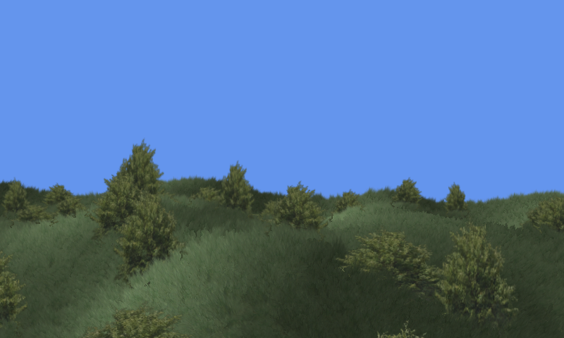

Billboard Sample
Ported from Microsoft's XNA 4.0 Billboard Sample.
Source for this sample on GitHub ↗

Play ▸Opens in a new tab. Move the camera to explore the field of billboards.
About this sample
Thousands of camera-facing grass, tree and cat sprites make a landscape look richly vegetated without drawing full 3D models for each plant. The vertex shader turns and sways the sprites in the wind; two rendering passes handle their opaque centers and translucent edges.
Controls
| Action | Keyboard | Gamepad |
|---|---|---|
| Rotate the camera | Arrow keys | Right stick |
| Move forward/backward | W and S | Left stick |
| Strafe | A and D | — |
| Reset the camera | R | Press right stick |
| Exit | Escape | Back |